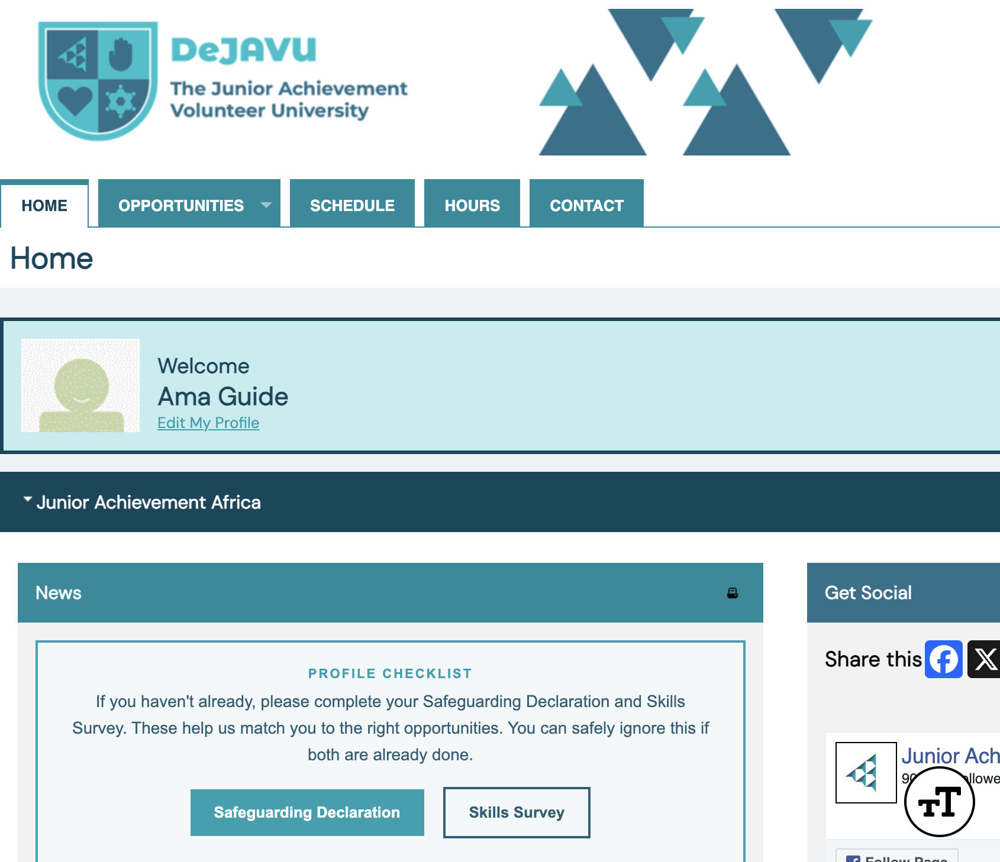
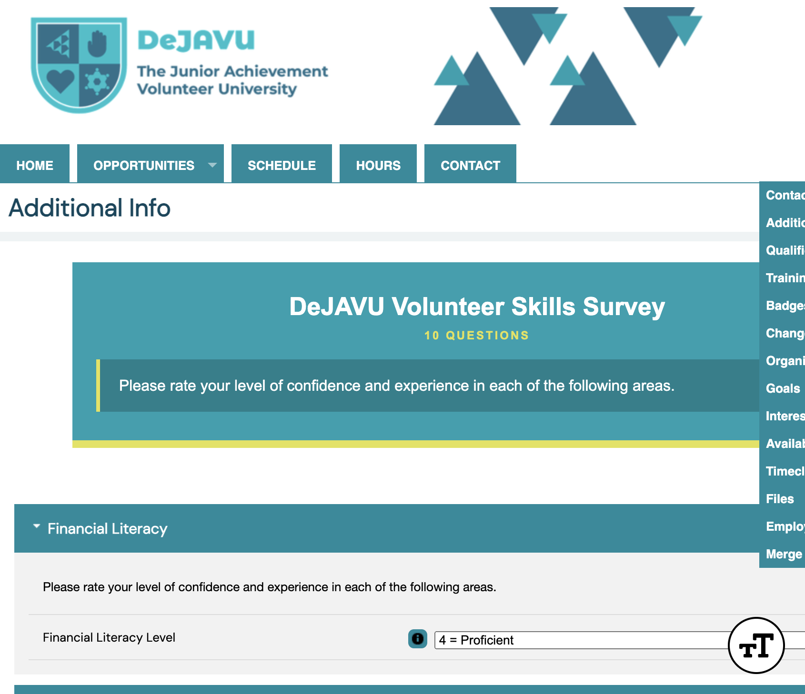
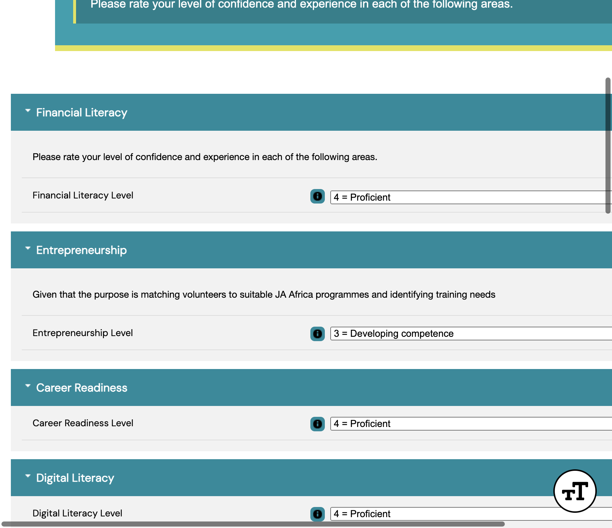
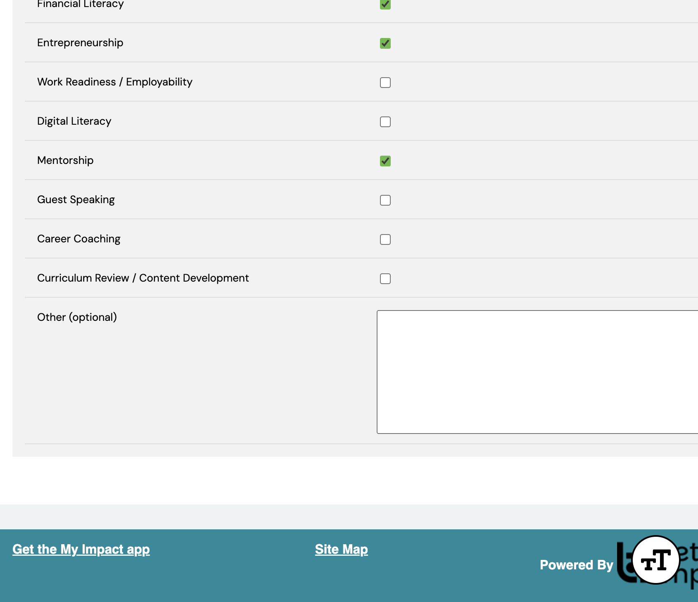
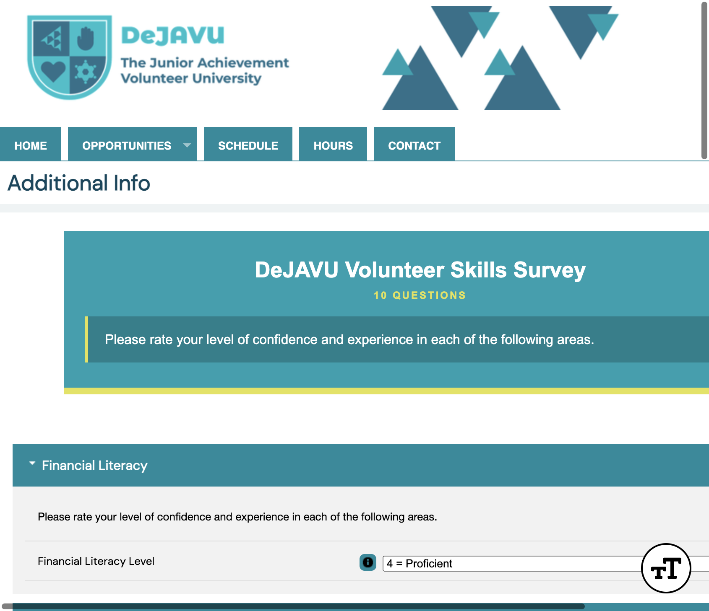

Volunteer guide
Audience · VolunteerComplete the Skills Survey
Tell DeJAVU about your skills so we can match you to the right volunteer opportunities. This survey is recommended.
Path: My Profile → Additional Info
Log in and open My Profile
Sign in to DeJAVU. On your home page you may see a Profile Checklist with a Skills Survey button — that opens the same form.
Or open it from the menu: click My Profile, then Additional Info.

Skills SurveyOpen Additional Info
The Additional Info page shows the DeJAVU Volunteer Skills Survey (10 questions). You will rate your confidence in each skill area.

My Profile menu Skills SurveyRate each skill area
For each section, choose the level that best matches you from the dropdown. Most areas use a scale from 1 = No competence to 5 = Advanced competence.
Areas include Financial Literacy, Entrepreneurship, Career Readiness, Digital Literacy, Facilitation, Mentoring, Engaging Youth, Problem Solving, Collaboration, and Commitment.

Choose your levelBe honest — these ratings help match you to programmes and may show where training would help.
Choose areas you want to support
At the bottom, tick the areas you most want to support (select all that apply), such as Financial Literacy, Entrepreneurship, or Mentorship. You can add a short note under Other (optional).

Tick areas to supportSave your answers
Click Save at the bottom of the page (or at the top). Your answers stay on Additional Info so you can update them later.

Saved answers remain hereYou can return any time via My Profile → Additional Info to change your ratings.